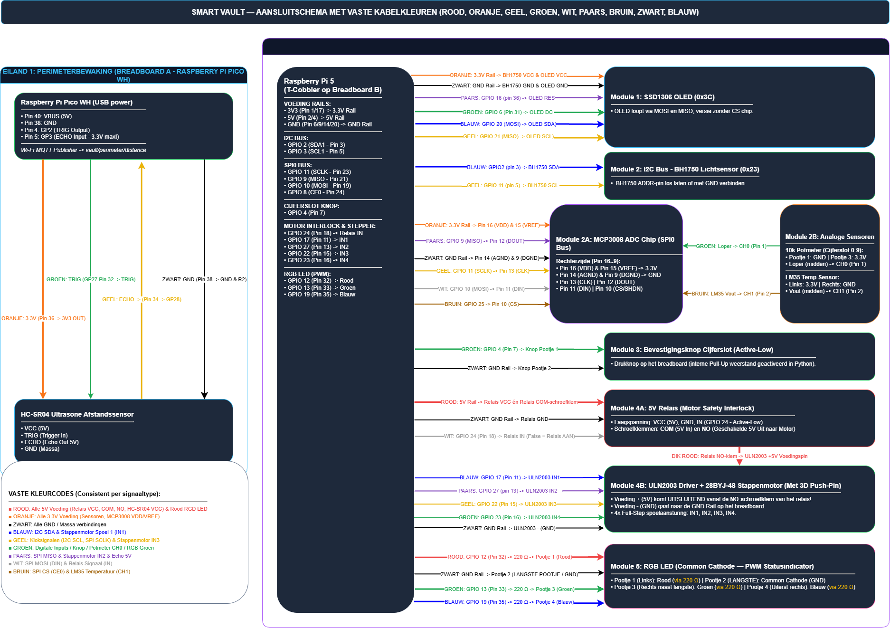

Hardware and connections
Pin map from the current code
GPIO numbers use BCM numbering, not physical header positions. The OLED uses SPI1 and the MCP3008 uses SPI0: they no longer share clock/data wires. Only the MCP3008 has a GPIO chip-select because this OLED module has no CS pin.
| Device / signal | BCM GPIO or channel | Source module |
|---|---|---|
| Button, active-low with pull-up | 4 | main.py |
| MCP3008 SPI0 clock / MOSI / MISO | 11 / 10 / 9 | sensors.py |
| MCP3008 chip select | 25 | sensors.py |
| Potentiometer wiper | MCP3008 CH0 | sensors.py |
| LM35 output | MCP3008 CH1 | sensors.py |
| BH1750 SDA / SCL | 2 / 3, I2C address 0x23 | sensors.py |
| SSD1306 reset / data-command | 16 / 6, SPI, 128 x 64; module has no CS | display.py |
| SSD1306 SPI1 clock (SCL) / data (SDA) | 21 / 20 (physical pins 40 / 38); no MISO connection | main.py, display.py |
| RGB LED red / green / blue | 12 / 13 / 26, PWM | zwaailicht.py |
| Relay control, active-low | 24 | vault_lock.py |
| Stepper driver IN1 / IN2 / IN3 / IN4 | 17 / 27 / 22 / 23 | vault_lock.py |
The MCP3008 chip-select is manually controlled on GPIO 25 (physical pin 22). GPIO 8 / CE0 is not used by the current code.
Part-by-part connections
GPIO numbers below use BCM numbering; physical header pin numbers are stated separately. Disconnect power before changing wiring. The diagram is a guide, not confirmation that the physical build matches it.
Raspberry Pi 5 and T-Cobbler
| Connection | Pi / breadboard connection | Details |
|---|---|---|
| T-Cobbler | 40-pin Pi header to breadboard | Passive adapter for the Pi header. |
| 3.3 V rail | Physical pin 1 or 17 | Sensor and logic supply where specified. |
| 5 V rail | Physical pin 2 or 4 | Use only for components designed for 5 V; never connect 5 V to a GPIO. |
| Ground rail | Common ground, for example pin 6 | Share ground between the Pi, sensors, and driven modules. |
| Code reference | main.py (application; the Cobbler and power rails are passive) | |
BH1750 light sensor
| Sensor pin | Pi connection | Details |
|---|---|---|
| VCC | 3.3 V rail | Power supply. |
| GND | Common ground | Shared with the Pi. |
| SDA | GPIO 2, physical pin 3 | I2C data. |
| SCL | GPIO 3, physical pin 5 | I2C clock. |
| ADDR | Leave open or connect to GND | Uses I2C address 0x23. |
| Code reference | sensors.py | |
MCP3008 analog-to-digital converter
| ADC pin | Pi / sensor connection | Details |
|---|---|---|
| VDD, VREF | 3.3 V rail | Logic supply and reference. |
| AGND, DGND | Common ground | Connect both grounds to the shared ground. |
| CLK | GPIO 11, physical pin 23 | SPI0 clock. |
| DOUT | GPIO 9, physical pin 21 | SPI0 MISO, ADC to Pi. |
| DIN | GPIO 10, physical pin 19 | SPI0 MOSI, Pi to ADC. |
| CS/SHDN | GPIO 25, physical pin 22 | Chip-select is controlled manually by the code. |
| CH0 | Potentiometer wiper | Digit selection input. |
| CH1 | LM35 Vout | Temperature input. |
| Code reference | sensors.py | |
10 kΩ potentiometer
| Potentiometer connection | Connect to | Details |
|---|---|---|
| Outer terminal 1 | Ground | One end of the voltage range. |
| Outer terminal 2 | 3.3 V | The other end of the voltage range. |
| Wiper (middle terminal) | MCP3008 CH0 | Turning selects a digit; hysteresis reduces flicker near digit boundaries. |
| Code reference | sensors.py and main.py | |
LM35 temperature sensor
| LM35 pin | Connect to | Details |
|---|---|---|
| Vs | 3.3 V rail | The selected sensor's 3.3 V supply has been verified. |
| GND | Common ground | Shared with the ADC and Pi. |
| Vout | MCP3008 CH1 | Analog temperature signal; verify the selected package's pin orientation. |
| Code reference | sensors.py and main.py | |
PIN confirmation button
| Button connection | Pi connection | Details |
|---|---|---|
| Terminal 1 | GPIO 4, physical pin 7 | Input uses the Pi's internal pull-up. |
| Terminal 2 | Ground | Pressed is low; released is high. |
| Code reference | main.py | |
OLED connections (SPI1)
The SSD1306 is a six-pin SPI module without a CS connection:
| OLED label | Pi signal | Physical header pin |
|---|---|---|
| VCC | 3.3 V | 1 or 17 (3.3 V rail) |
| GND | Ground | For example 6 (common ground rail) |
| RES / RST | GPIO 16 | 36 |
| DC | GPIO 6 | 31 |
| SDA / DIN (data) | GPIO 20 / MOSI1 | 38 |
| SCL / CLK (clock) | GPIO 21 / SCLK1 | 40 |
| Code reference | display.py and main.py | |
The OLED uses no MISO wire. Its SDA and SCL labels refer to SPI data and clock, not I2C. The MCP3008 uses SPI0 (GPIO 11/10/9, CS 25).
Display() opens SPI1 with
busio.SPI(clock=board.D21, MOSI=board.D20). The application,
root preflight and standalone display test use this same default.
Display.close() releases a bus created by the display; an
explicitly supplied SPI bus remains owned by its caller. SPI1 configuration
is described in the setup notes.
Pico 2 W perimeter node
A separate Raspberry Pi Pico 2 W runs CircuitPython and measures distance with an
RCWL-9610A sonar in trigger/echo mode. It publishes the distance in cm to the MQTT
broker on the Pi (topic vault/perimeter/distance). Numbers below are
physical pin numbers of the Pico.
Firmware and install notes are in pico_2w/.
| Sonar pin | Pico 2 W pin |
|---|---|
| VCC | 36 (3V3 OUT) |
| GND | 38 |
| TRIG | 32 (GP27) |
| ECHO | 34 (GP28) |
| Code reference | pico_2w/code.py and mqtt_client.py |
On 3.3 V the echo signal is 3.3 V, so no level shifting is needed. If the sensor is powered from 5 V (pin 40), add a 1 kΩ / 2 kΩ divider on ECHO.
Actuators and indicators
5 V relay module
| Relay connection | Connect to | Details |
|---|---|---|
| VCC | 5 V rail | Confirm the module supports the supply. |
| GND | Common ground | Shared with the Pi and driver. |
| IN | GPIO 24, physical pin 18 | Active-low: GPIO low energizes the relay. |
| COM / NO | 5 V motor supply path | The documented contact path switches motor power to the stepper driver; verify contact ratings. |
| Code reference | vault_lock.py | |
ULN2003 driver and 28BYJ-48 stepper
| Driver / motor connection | Connect to | Details |
|---|---|---|
| IN1 / IN2 / IN3 / IN4 | GPIO 17 / 27 / 22 / 23 (physical pins 11 / 13 / 15 / 16) | Ordered coil-control signals. |
| Motor supply | Switched 5 V from relay NO | Use the driver; never power the motor from GPIO. |
| Ground | Common ground | Shared with the Pi and driver supply. |
| Motor phases | 28BYJ-48 connector to ULN2003 | Do not connect motor windings directly to Pi pins. |
| Code reference | vault_lock.py | |
RGB status LED
| LED connection | Connect to | Details |
|---|---|---|
| Common cathode | Ground | Documented LED type; confirm the actual part. |
| Red | GPIO 12, physical pin 32, through 220 Ω resistor | PWM brightness control. |
| Green | GPIO 13, physical pin 33, through 220 Ω resistor | PWM brightness control. |
| Blue | GPIO 26, physical pin 37, through 220 Ω resistor | PWM brightness control. |
| Code reference | zwaailicht.py | |
Microphone and Bluetooth speaker
| Peripheral | Connection | Code reference |
|---|---|---|
| USB microphone | USB audio input; not a GPIO connection in the diagram. | voice.py |
| Bluetooth speaker | Paired over Bluetooth for audio alerts. | notificaties.py |
The second authentication factor is bypassed by default in the current configuration.
Known diagram differences
- The GPIO assignments for the Raspberry Pi 5 now match the code, including
BH1750 SCL on GPIO 3, MCP3008 CS on GPIO 25, and RGB blue on GPIO 26.
The Pi block has a typo:
MOSO1should be MOSI1. - The Pico callout now maps physical pins 32 / 34 to GP27 / GP28, matching
pico_2w/code.py. However, the diagram labels the board Pico W and the sensor HC-SR04, while the repository documentation identifies a Pico 2 W and an RCWL-9610A. Confirm the actual board and sensor, then make the diagram and project documentation consistent. - The diagram labels the sonar VCC and ECHO as 3.3 V, but its color legend still calls ECHO 5 V. Correct the legend to match the selected sensor and its verified signal levels. Do not connect a 5 V ECHO output directly to a Pico GPIO.
Latest connection diagram
Open the full-size diagram or download its editable draw.io source. Both files were copied from the latest team project schema; update them together after reviewing the wiring.


Electrical checks still required
Use 3.3 V-compatible GPIO signals and verify the MCP3008 supply/reference, sensor supply requirements, common ground, and LED resistors against the actual components. The 3.3 V supply for the selected LM35 has been verified. Motors must use a suitable driver, not GPIO power. Verify the selected Pico sonar's supply and echo levels; any 5 V echo signal needs level shifting before it reaches a Pico GPIO.